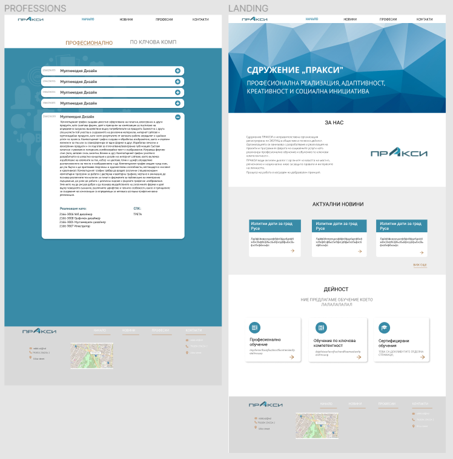

WordPress page
Webpage set up using CMS, containing several pages explaining the information about the company. Part of the website is dynamic, allowing the administrator of the page to update page visitors with the latest news.
The clients wish was to display the core purpose of the corporation and inform its visitors about the upcoming projects/events.
In order to complete the task it was decided to use a Content Management System (CMS) - WordPress. The project was made from scratch during the period of 2 weeks, including these steps:
- - Thorough project planning
- - Client brief
- - Low and high fidelity mock-ups
- - Set up of CMS systems
- - Structuring of content (Information Architecture)
- - SEO optimization
My roles in the project:
- - UI Designer
- - CMS set-up
- - Developer
- - Deployment
Technologies and tools used in the project:
- HTML5
- CSS3
- Figma
- Illustrator
- WordPress
- SSL Certificate
Low-fi prototypes & High-fi prototypes

Key plugins used in the project
- Elementor
- Yoast SEO
- EA